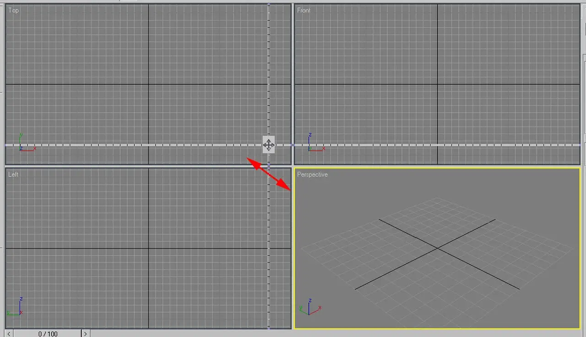

Short answer
The HTML viewport is the area of the page the browser lays out, and the viewport meta tells mobile browsers to use the device width.
The figure is a graphics program: four panes labeled Top, Front, Left, and Perspective. That is a real use of the word, and it is not the tag in an HTML head. Mixing the two produces advice that never touches the document. SEO Health looks for the meta element on the pages people open on a phone.
Definition
A common form is a meta element named viewport whose content sets the width to the device width. Without it, many phones lay the page out at a wide virtual size and then shrink it, so text is small and taps miss. Setting a fixed pixel width that is narrower or wider than the device recreates the same problem. The modeling panes in the figure do not show this tag. They only explain why the word is easy to misuse.
What belongs in the page basics
Put one viewport meta on the document and set its width to the device width.
Do not add a second viewport meta that disagrees with the first. Do not disable zoom to force a layout. A template that injects the tag only after JavaScript runs leaves the first paint wrong for anyone who has not run that script. View the same URL at a narrow width after the tag is in the raw HTML. The 3D panes are not that test.

What to check
- One viewport meta in the raw HTML
- Width set to the device width
- No second meta that conflicts
- Zoom not disabled to hide a layout problem
- One product URL opened at a narrow width
A practical example
A product template has no viewport meta, and on a phone the specification table is a tiny wide page. The repair adds the device-width meta in the shared head and checks one product URL in a narrow window. The modeling screenshot stays on the source page as a picture of a different viewport. It is not evidence that the template changed.
What this does not claim
A viewport meta does not guarantee rankings or citations.
Where Mika Visibility files this
Mika Visibility files titles, headings, language, and media basics under SEO Health content and structure checks. They help a page be understood. They are not SEO Growth, which asks what coverage is still missing, and they are not a guarantee that an answer product will cite the page.
The four panes are a graphics workspace. The check is still the meta element in the HTML.
FAQ
What is the HTML viewport?
The HTML viewport is the area of the page the browser lays out, and the viewport meta tells mobile browsers to use the device width.
What should the meta say?
Put one viewport meta on the document and set its width to the device width.
Does a viewport meta guarantee rankings?
A viewport meta does not guarantee rankings or citations.
Next step
Run a structured SEO + GEO audit to see health findings, growth gaps, and a blueprint you can act on.
Clearer entities, answers, evidence, and context make pages easier to understand and reference. Results in any answer product are not guaranteed.